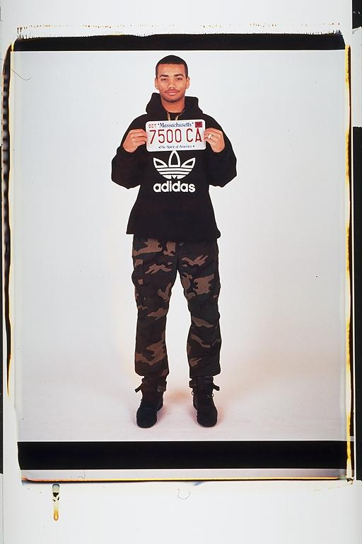

Eugene: "My First Car" -- My first Car! I had it for three days. I will forever be made fun of for not putting any water in the 1982 Toyota Tercel. Hopefully I learned to take care of cars. It definitely was a hoopty. I was dressed like a "psuedo-thug" with my camoflage pants, hoody, big chain and name ring.
Aldo: Eugene's first car. I remember how excited he was that he had a car. Unfortunately he did not know enough about cars to notice it was out of water one day. So, for about one week Eugene had a car. And this license plate is the proof.
Isaac: "Remember Grasshopper: like mighty oak or limp grass, the 1982 Toyota Tercel needs water to survive." Even when Eugene’s elected mayor of Boston, I'll still tease him about that car. It was really sad at the time, but now we can (and quite often do) kid him about it.
